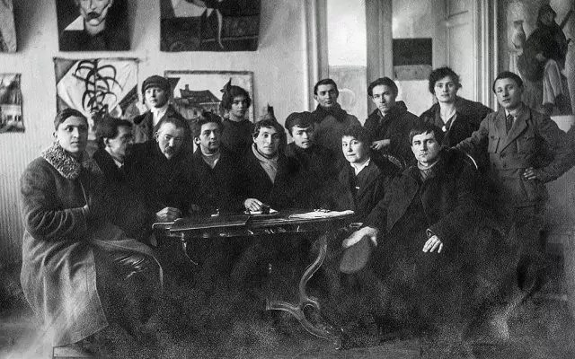
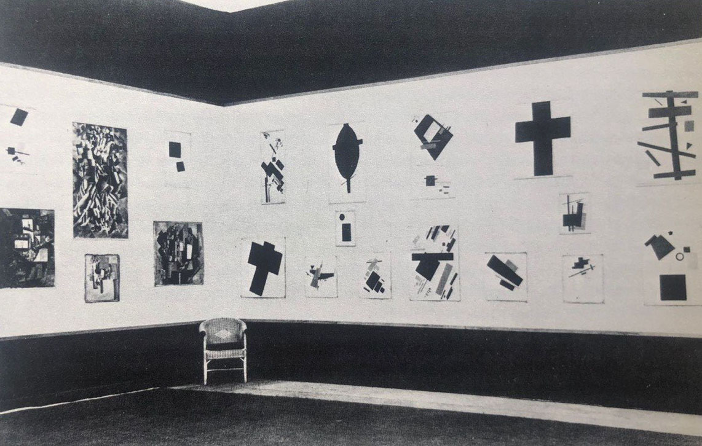
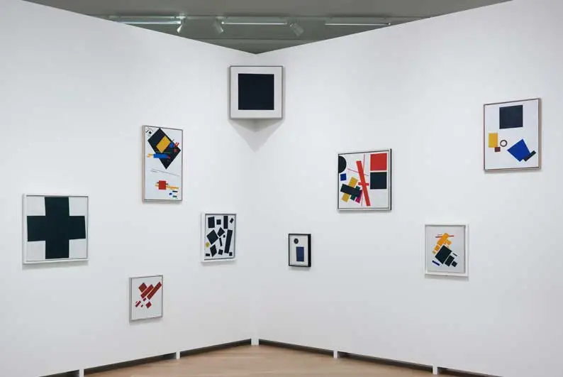
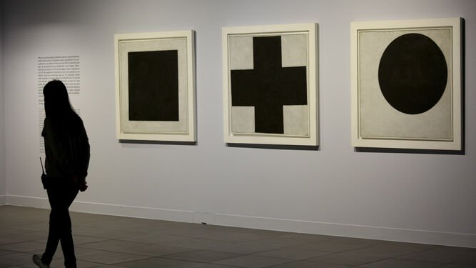

Las exposiciones de Kazimir Malévich fueron más que simples muestras de arte: fueron declaraciones de una nueva era visual. Desde los primeros años del siglo XX hasta las grandes retrospectivas internacionales, cada presentación de su obra reveló una transformación en la manera de entender el arte, el espacio y el pensamiento abstracto.
1915 — “0.10. Última Exposición Futurista”, Petrogrado
Esta exposición marcó el nacimiento del suprematismo. En una sala pequeña en la calle Morskaia, Malévich presentó más de treinta obras abstractas, entre ellas su pieza más célebre: “Cuadro negro sobre fondo blanco”, colgado en la esquina superior, como si fuera un icono sagrado.
El gesto fue radical: proclamó el fin de la pintura representativa y el comienzo del arte puro. El público reaccionó con desconcierto, pero la historia del arte cambió para siempre. A partir de ese momento, el cuadrado negro se convirtió en un símbolo de la ruptura y de la libertad espiritual.

1923–1926 — La etapa de Vítebsk y el Instituto GINJUK
Durante su labor docente en la Escuela de Vítebsk y luego en el Instituto Estatal de Cultura Artística (GINJUK) en Leningrado, Malévich organizó exposiciones internas que funcionaban como laboratorios visuales. Allí, junto a El Lissitzky, Chashnik, Suétin y Puni, desarrolló maquetas, relieves y modelos arquitectónicos llamados arkhitektony, donde las formas suprematistas se trasladaban al espacio tridimensional.
Estas exposiciones, aunque poco conocidas fuera de Rusia, fueron decisivas para el desarrollo del diseño moderno y la enseñanza artística experimental.
1927 — Berlín: La primera exposición internacional
En 1927, Malévich viajó a Alemania para participar en una muestra en la Galería Grosse Berliner Kunstausstellung. Llevó consigo más de 100 obras, manuscritos y maquetas. El contacto con la Bauhaus —especialmente con Walter Gropius y László Moholy-Nagy— consolidó el diálogo entre el suprematismo y el constructivismo europeo.
Sin embargo, tras su regreso a la URSS, el clima político se volvió hostil hacia la abstracción. Malévich murió en 1935 sin volver a ver la mayoría de sus obras, que permanecieron en Alemania durante décadas.
1959–1977 — El redescubrimiento en Occidente
Después de su muerte, las obras de Malévich fueron rescatadas por historiadores y museos europeos. En 1959, el Stedelijk Museum de Ámsterdam organizó una exposición retrospectiva que devolvió al artista al centro del debate artístico internacional. Durante los años 60 y 70, su influencia se extendió a través de movimientos como el minimalismo y el arte conceptual.
Museos como el MoMA de Nueva York, la Tate Modern de Londres y el Museo Reina Sofía de Madrid incorporaron sus obras a sus colecciones permanentes, legitimando definitivamente su legado.
2000–Actualidad — La relectura contemporánea
En las últimas décadas, las exposiciones sobre Malévich han ofrecido nuevas interpretaciones de su pensamiento. La muestra “Kazimir Malévich: Suprematismo” (Tate Modern, 2014) o la retrospectiva en el Centro Pompidou (2002) lo presentaron como un filósofo del color y el vacío, más allá de la abstracción geométrica.
Las reconstrucciones digitales y las muestras interactivas actuales permiten que nuevas generaciones experimenten su obra no solo como pintura, sino como una experiencia inmersiva. La figura de Malévich reaparece así en diálogo con el arte digital y la inteligencia artificial, manteniendo viva su pregunta esencial:
“¿Puede el arte liberar al espíritu en una era dominada por la materia?”
